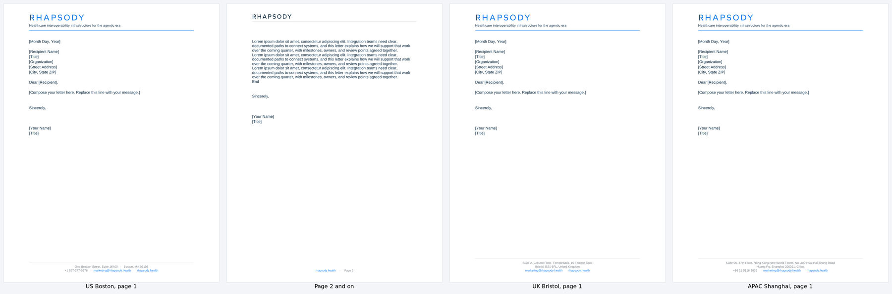

Every letter and everyday Word document from Rhapsody starts from the letterhead for the sender’s office, whether someone builds it in Word or Claude creates it. There is one letterhead per office, as a Word template (.dotx) and a ready-to-edit document (.docx). Find them in the Letterhead folder on SharePoint (Marketing > Private > Graphic Design > Templates > Document Templates > Letterhead). They replace the 2023 and FY26 letterhead templates.

Page 1 for each office, and page 2 and on, which are the same for every office.
Which template to use
Document
Start from
Letters, memos, notices, cover letters, statements, and any other everyday Word document
The letterhead for the sender’s office
White papers, release notes, and customer security advisories
The technical document templates (see Technical documents)
Designed marketing pieces, like ebooks
Their own pattern (see Ebooks)
Offices
Template
Footer on page 1
US Boston
One Beacon Street, Suite 16400 · Boston, MA 02108 · +1 857-277-5678 · marketing@rhapsody.health · rhapsody.health
UK Bristol
Suite 2, Ground Floor, Templeback, 10 Temple Back · Bristol, BS1 6FL, United Kingdom · marketing@rhapsody.health · rhapsody.health
APAC Shanghai
Suite 06, 47th Floor, Hong Kong New World Tower, No. 300 Huai Hai Zhong Road · Huang Pu, Shanghai 200021, China · +86 21 5116 2826 · marketing@rhapsody.health · rhapsody.health
Use the sender’s office. If it isn’t known, use US Boston.
What’s on the page
Page 1: the Rhapsody logo top left, the tagline “Healthcare interoperability infrastructure for the agentic era” below it, and a hairline. The footer holds the office address, phone, email, and website, centered, in gray with the email and website in Rhapsody Blue.
Page 2 and on: a smaller logo with a hairline at the top, and “rhapsody.health · Page N” in the footer. Word adds these on its own when the letter runs over.
Letter: date, recipient block, salutation, body, sign-off, then name and title, all as bracketed placeholders.
Type and page: Arial 11pt in Rhapsody Navy #0B2C47 (Arial so the letter looks the same on every computer), US Letter, 1in side margins.
Using it
In Word: open the template from the Letterhead folder (or from File > New once it’s in Rhapsody’s Microsoft templates) and replace the bracketed placeholders.
In Claude: start from the .docx for the sender’s office and replace the placeholders; never rebuild the letterhead or draw a new header. Keep the page 1 and page 2 headers and footers as they are.
The logo appears once per page, in the header. Don’t add it to the body or the signature.
Keep body text in the template’s Arial 11pt navy. If a document needs headings, set them in Arial navy, not Word’s default blue heading styles.
Delete any placeholder lines you don’t use, like the recipient block in a memo. Don’t leave brackets in a finished document.
The templates are in templates/word-documents/letterhead/ in the design system repository, and the .docx copies are in the brand skill.